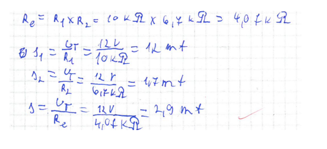
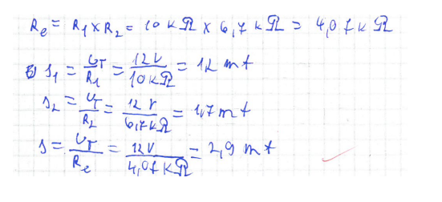

Önreflexio
A tantárgy keretein belül foglalkoztunk különböző áramköri elemek felépítésesével használatának módjával. Egy nagyobb probléma volt, mégpedig az, hogy nem jutott idő a váltakozó árammal kapcsolatos órákra, mivel a tanév véget ért. Az év elején emiatt szükség lesz egy kis felzárkóztatásra a villamossági alapokból.